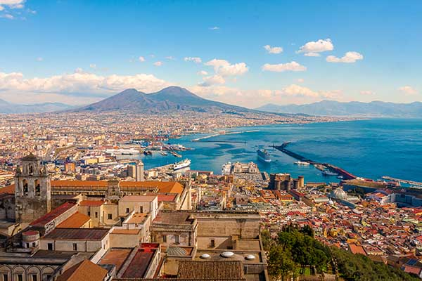

Burada Napoli'deki deneyimlerim hakkında kısa bir yazı olacak.
Napoli, İtalya'nın güneyinde yer alan tarihi bir şehirdir. Aynı zamanda dünyanın en ünlü pizzalarının yapıldığı yerdir. Napoli'nin dar sokaklarında dolaşırken, hem lezzetli pizza kültürünü keşfederken hem de tarihi yapıları inceleyebilirsiniz. Ayrıca, Vezüv Yanardağı'nın eteklerinde bu büyüleyici şehri görmek inanılmaz bir deneyimdir.
 Ana Sayfa'ya Dön